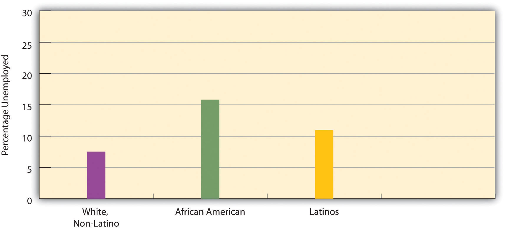
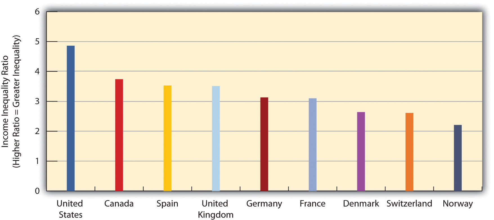
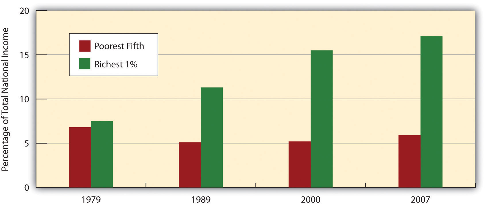

“White-Collar Workers Join Crowds Straining Food Banks,” the headline said. Amid the nation’s continuing faltering economy, middle-class families across the United States who had lost their jobs were being forced to get free food at food pantries. One woman, who lost her job as a consultant, said her family’s savings had dwindled to less than $200. “Without the network of food pantries around us, I don’t know how we would have eaten,” she said. As more middle-class workers were turning to the food pantries, the pantries’ donations had fallen. As one food pantry official put it, “We’re seeing many faces from the middle class who had been donors who now need support from our food bank. Right now, our donations are softer than we would like them to be.” Meanwhile, a survey of college-educated New York residents found that 30 percent said they had trouble affording food.
Source: Cole, 2012Cole, P. (2012, January 11). White-collar workers join crowd straining food banks. Bloomberg.com. Retrieved from http://www.bloomberg.com/news/2012-01-11/mercedes-owners-ph-d-holders-join-swelling-crowd-straining-soup-kitchens.html.
One of the most momentous events of the twentieth century was the Great Depression, which engulfed the United States in 1929 and spread to the rest of the world, lasting almost a decade. Millions were thrown out of work, and bread lines became common. In the United States, a socialist movement gained momentum for a time as many workers blamed US industry and capitalism for their unemployment.
The Depression involved the failing of the economy. The economy also failed in the United States beginning in late 2007, when the country entered what has been called the Great Recession. Although the recession has officially ended, the jobless rate remains much higher than before the recession. The news article that began this chapter provides just a small illustration of the millions of lives that have been affected.
This chapter examines the many problems related to work and the economy in the United States today. It also examines the related issues of economic inequality and economic mobility. As we shall see, the United States has a mediocre record in both these areas when compared to other wealthy democracies.
When we hear the term economy, it is usually in the context of how the economy “is doing”: Is inflation soaring or under control? Is the economy growing or shrinking? Is unemployment rising, declining, or remaining stable? Are new college graduates finding jobs easily or not? All these questions concern the economy, but sociologists define economyThe social institution that organizes the production, distribution, and consumption of a society’s goods and services. more broadly as the social institution that organizes the production, distribution, and consumption of a society’s goods and services. Defined in this way, the economy touches us all. Keep in mind that the economy is not the same as government, which is the social institution through which power is distributed and exercised. Economy and government are social institutions that are certainly intertwined, but conceptually they are distinct.
The economy is composed of three sectors. The primary sectorThe part of the economy that takes and uses raw materials directly from the natural environment. is the part of the economy that takes and uses raw materials directly from the natural environment. Its activities include agriculture, fishing, forestry, and mining. The secondary sectorThe part of the economy that transforms raw materials into finished products. of the economy transforms raw materials into finished products and is essentially the manufacturing industry. Finally, the tertiary sectorThe part of the economy that provides services rather than products. is the part of the economy that provides services rather than products; its activities include clerical work, health care, teaching, and information technology services.
Societies differ in many ways, but they all have to produce, distribute, and consume goods and services. How this happens depends on which sectors of the economy are most important. This latter variable in turn depends heavily on the level of a society’s development. Generally speaking, the less developed a society’s economy, the more important its primary sector; the more developed a society’s economy, the more important its tertiary sector. As societies developed economically over the centuries, the primary sector became less important and the tertiary sector became more important. The primary sector was certainly the only sector in the hunting-and-gathering societies that existed thousands of years ago, while the tertiary sector dominates much of the economy in today’s wealthiest democracies.
The two major economic systems in modern societies are capitalism and socialism. In practice, no one society is purely capitalist or socialist, so it is helpful to think of capitalism and socialism as lying on opposite ends of a continuum. Societies’ economies mix elements of both capitalism and socialism but do so in varying degrees, so that some societies lean toward the capitalist end of the continuum, while other societies lean toward the socialist end. For example, the United States is a capitalist nation, but the government still regulates many industries to varying degrees. The industries usually would prefer less regulation, while their critics usually prefer more regulation. The degree of such regulation was the point of controversy after the failure of banks and other financial institutions in 2008 and 2009. Let’s see how capitalism and socialism differ.
CapitalismAn economic system in which the means of production are privately owned. is an economic system in which the means of production are privately owned. By means of production, we mean everything—land, tools, technology, and so forth—that is needed to produce goods and services. As outlined by famed Scottish philosopher Adam Smith (1723–1790), widely considered the founder of modern economics, the most important goal of capitalism is the pursuit of personal profit (Smith, 1776/1910).Smith, A. (1910). The wealth of nations. (Original work published 1776). London, United Kingdom: University Paperbacks. As individuals seek to maximize their own wealth, society as a whole is said to benefit. Goods get produced, services are rendered, people pay for the goods and services they need and desire, and the economy and society as a whole prosper.
As people pursue personal profit under capitalism, they compete with each other for the greatest profits. Businesses try to attract more demand for their products in many ways, including lowering prices, creating better products, and advertising how wonderful their products are. In capitalist theory, such competition helps ensure the best products at the lowest prices, again benefiting society as a whole. Such competition also helps ensure that no single party controls an entire market. According to Smith, the competition that characterizes capitalism should be left to operate on its own, free of government intervention or control. For this reason, capitalism is often referred to as laissez-faire (French for “leave alone”) capitalism, and terms to describe capitalism include the free-enterprise system and the free market.
The hallmarks of capitalism, then, are private ownership of the means of production, the pursuit of profit, competition for profit, and the lack of government intervention in this competition.
The features of socialism are the opposite of those just listed for capitalism and were spelled out most famously by Karl Marx. SocialismAn economic system in which the means of production are collectively owned, usually by the government. is an economic system in which the means of production are collectively owned, usually by the government. Whereas the United States has several airlines that are owned by airline corporations, a socialist society might have one government-owned airline.
The most important goal of socialism is not the pursuit of personal profit but rather work for the collective good: The needs of society are considered more important than the needs of the individual. Because of this view, individuals do not compete with each other for profit; instead they work together for the good of everyone. If under capitalism the government is supposed to let the economy alone, under socialism the government controls the economy.
The ideal outcome of socialism, said Marx, would be a truly classless or communist society. In such a society all members are equal, and stratification does not exist. Obviously Marx’s vision of a communist society was never fulfilled, and nations that called themselves communist departed drastically from his vision of communism.
Recall that societies can be ranked on a continuum ranging from mostly capitalist to mostly socialist. At one end of the continuum, we have societies characterized by a relatively free market, and at the other end we have those characterized by strict government regulation of the economy. Figure 12.1 "Capitalism and Socialism across the Globe" depicts the nations of the world along this continuum. Capitalist nations are found primarily in North America and Western Europe but also exist in other parts of the world.
Figure 12.1 Capitalism and Socialism across the Globe

Source: Adapted from The Heritage Foundation. (2010). Distribution of economic freedom. Retrieved from http://www.heritage.org/index/pdf/2010/Index2010_map.pdf.
People have debated the relative merits of capitalism and socialism at least since the time of Marx (Bowles, 2012; Cohen, 2009).Bowles, P. (2012). Capitalism. New York, NY: Longman; Cohen, G. A. (2009). Why not socialism? Princeton, NJ: Princeton University Press. Compared to socialism, capitalism has several advantages. It produces greater economic growth and productivity, at least in part because it provides more incentives (i.e., profit) for economic innovation. It also is often characterized by greater political freedom in the form of civil rights and liberties. As an economic system, capitalism seems to lend itself to personal freedom: Because its hallmarks include the private ownership of the means of production and the individual pursuit of profit, there is much more emphasis in capitalist societies on the needs and desires of the individual and less emphasis on the need for government intervention in economic and social affairs.
Yet capitalism also has its drawbacks. There is much more economic inequality in capitalism than in socialism. Although capitalism produces economic growth, not all segments of capitalism share this growth equally, and there is a much greater difference between the rich and poor than under socialism. People can become very rich in capitalist nations, but they can also remain quite poor.
Another possible drawback depends on whether you prefer competition or cooperation. It is often said that important values in the United States include competition and individualism, both of which arguably reflect this nation’s capitalist system. Children in the United States are raised with more of an individual orientation than children in socialist societies, who learn that the needs of their society are more important than the needs of the individual. Whereas US children learn to compete with each other for good grades, success in sports, and other goals, children in socialist societies learn to cooperate to achieve tasks.
More generally, capitalism is said by its critics to encourage selfish and even greedy behavior: If individuals try to maximize their profit, they do so at the expense of others. In competition, someone has to lose. A company’s ultimate aim, and one that is generally lauded, is to maximize its profits by driving another company out of the market altogether. If so, that company succeeds even if some other party is hurting. The small mom-and-pop grocery stores, drugstores, and hardware stores are almost a thing of the past, as big-box stores open their doors and drive their competition out of business. To its critics, then, capitalism encourages harmful behavior, and there are many losers in capitalism. Yet it is precisely this type of behavior that is taught in business schools.
As a business columnist recently summarized these problems of capitalism,
Why does one have to be a Democrat or a liberal to complain bout the way business gets done? Like most Americans, I am OK with the notion that free-market capitalism produces winners and losers. What I don’t like is that it also produces liars, cheaters, swindlers, self-dealing narcissists, overleveraged idiots and reckless egomaniacs out to abuse their economic power and take unfair advantage of hard-working people.
I don’t complain about fraud, abuse and folly because I am antibusiness or anticapitalist…What free-market capitalism hasn’t yet figured out is what to do with all its losers. At this point in the economic cycle, they are piling up like used tires: debt-sacked college kids who can’t get jobs, foreclosed homeowners, failed small-business owners, pink-slipped employees, [and] millions suddenly ejected from the middle class. (Lewis, 2012, p. C3)Lewis, A. (2012, January 14–15). Occupy Mitt Romney! Bangor Daily News, p. C3.
Some nations combine elements of both capitalism and socialism and are called social democracies, while their combination of capitalism and socialism is called democratic socialismAn economic system in which the government owns several important industries, but much property remains in private hands, and political freedom is widespread.. In these nations, which include Denmark, Sweden, and several other Western European nations, the government owns several important industries, but much property remains in private hands, and political freedom is widespread. The governments in these nations have extensive programs to help the poor and other people in need. Although these nations have high tax rates to help finance their social programs, their experience indicates it is very possible to combine the best features of capitalism and socialism while avoiding their faults (Russell, 2011)Russell, J. W. (2011). Double standard: Social policy in Europe and the United States (2nd ed.). Lanham, MD: Rowman & Littlefield. (see Note 12.10 "Lessons from Other Societies").
Democratic Socialism in Scandinavia
The five Scandinavian nations, also called the Nordic nations, are Denmark, Finland, Iceland, Norway, and Sweden. These nations differ in many ways, but they also share many similarities. In particular, they are all social democracies, as their governments own important industries while their citizens enjoy much political freedom. Each nation has the three branches of government with which most people are familiar—executive, judicial, and legislative—and each nation has a national parliament to which people are elected by proportional representation.
Social democracies like the Scandinavian nations are often called controlled capitalist market economies. The word controlled here conveys the idea that their governments either own industries or heavily regulate industries they do not own. A key feature of these social democracies’ economies is that inequality in wealth and income is not generally tolerated. Employers, employees, and political officials are accustomed to working closely to ensure that poverty and its related problems are addressed as much as possible and in as cooperative a manner as possible.
Underlying this so-called social welfare model is a commitment to universalism. All citizens, regardless of their socioeconomic status or family situation, receive various services, such as child care and universal health care, that are free or heavily subsidized. To support this massive provision of benefits, the Scandinavian nations have very high taxes that their citizens generally accept as normal and necessary.
The Scandinavian nations rank at or near the top in international comparisons of health, education, economic well-being, and other measures of quality of life. The Scandinavian experience of social democracy teaches us that it is very possible to have a political and economic model that combines the best features of capitalism and socialism while retaining the political freedom that citizens expect in a democracy.
Sources: Russell, 2011; Sejersted, 2011Russell, J. W. (2011). Double standard: Social policy in Europe and the United States (2nd ed.). Lanham, MD: Rowman & Littlefield; Sejersted, F. (2011). The age of social democracy: Norway and Sweden in the twentieth century (R. Daly, Trans.). Princeton, NJ: Princeton University Press.
We now turn from a general discussion of economic systems to some basic facts on the labor force in the world’s leading capitalist nation, the United States. The civilian labor forceAll noninstitutionalized civilians 16 years old or older who work for pay or are looking for work. in the United States consists of all noninstitutionalized civilians 16 years of age or older who work for pay or are looking for work. The civilian labor force (hereafter labor force) consists of about 154 million people, or almost two-thirds of the population, including about 71 percent of men and 58 percent of women (Bureau of Labor Statistics, 2012).Bureau of Labor Statistics. (2012). 2012 employment and earnings online. Washington, DC: Author. Retrieved from http://www.bls.gov/opub/ee/home.htm.
Of those who are currently employed, approximately 2.4 million people work in the agricultural sector, and a much larger number, 138 million, work in nonagricultural industries. Of the latter number, 109 million work in private industry, 21 million work in government, and almost 9 million are self-employed. Most of the currently employed work full-time, but more than 26 million work only part-time. Of this number, 69 percent work part-time for noneconomic reasons; for example, they have childcare or other family obligations, or they are in school. Another 31 percent work part-time for economic reasons: They are unable to find a full-time job, or they may have lost a full-time job because of the faltering economy.
Approximately 87 million Americans ages 16 and older are not in the labor force. Of this number, 93 percent do not desire a job. Most of these individuals are retired, disabled, or taking care of children and/or other family members. Of the 7 percent who would like a job but are still not in the labor force, most have dropped out of the labor force (stopped looking for a job) because they have become discouraged after previously looking for work but not finding a job.
Some 5 percent of currently employed people have two or more jobs at any one time. This percentage translates to about 7 million individuals. It varies slightly by gender: 5.3 percent of employed women have at least two jobs, compared to 4.7 percent of employed men.
Chapter 4 "Gender Inequality" noted that women’s labor force participation soared during the last few decades. This general increase is even steeper for married women with children under 6 years of age: In 2009, almost 62 percent of such women were in the labor force, compared to less than 19 percent in 1960 (US Census Bureau, 2012),US Census Bureau. (2012). Statistical abstract of the United States: 2012. Washington, DC: US Government Printing Office. Retrieved from http://www.census.gov/compendia/statab. a threefold difference (see Figure 12.2 "Labor Force Participation Rate of Married Women with Children Younger than 6 Years of Age, 1960–2007").
Figure 12.2 Labor Force Participation Rate of Married Women with Children Younger than 6 Years of Age, 1960–2007

Source: Data from US Census Bureau. (2012). Statistical abstract of the United States: 2012. Washington, DC: US Government Printing Office. Retrieved from http://www.census.gov/compendia/statab.
The three sociological perspectives examined in earlier chapters continue to offer insights that help us understand the economy, including the nature of work on which any economy rests. Table 12.1 "Theory Snapshot" summarizes these insights.
Table 12.1 Theory Snapshot
| Theoretical perspective | Major assumptions |
|---|---|
| Functionalism | Work and the economy serve several functions for society. The economy makes society possible by providing the goods and services it needs. Work gives people an income and also provides them some self-fulfillment and part of their identity. |
| Conflict theory | Control of the economy enables the economic elite to maintain their position at the top of society and to keep those at the bottom in their place. Work is often alienating, and the workplace is often a site for sexual harassment and other problems. |
| Symbolic interactionism | This perspective focuses on social interaction in the workplace, on how employees respond to problems in their workplaces, and on how they perceive the work they do. |
Recall that the functionalist perspective highlights the many functions that social institutions serve for society. Accordingly, this perspective paints a positive picture of work and the economy by pointing to their many benefits.
The economy’s major function is also an absolutely essential function: the provision of goods and services. Because the economy provides the goods and services that any society needs, the economy makes a society possible. As we saw earlier, capitalist and socialist societies provide goods and services in different ways, and each type of economy has its advantages and disadvantages. Regardless of the relative merits of capitalism and socialism, however, both a capitalist economy and socialist economy make possible the societies in which they are found.
Many high school students have summer jobs or after-school jobs. Whether or not they go to college, most people work for pay once they reach adulthood. Some work full-time until they retire, some alternate full-time work and part-time work, and some may start out with a job but drop out of the labor force to raise their children. Regardless of these various work patterns, the most important function that most people derive from working is their paycheck. Simply put, work provides the income that most people need for food, clothing, shelter, and other essential needs in today’s society.
But work has important, nonmaterial functions beyond helping us pay the bills. Many people consider their job part of their overall identity, just as the college students reading this book consider being a student as part of their current identity. As we enter adulthood, we are not just a spouse, partner, parent, or child of our parents; we are also an accountant, banker, claims adjuster, day care worker, elementary school teacher, financial consultant, garage door installer, and so forth. The job we have helps provide us with a sense of who we are, or, to put it another way, a sense of our identity.
Especially if we enjoy our jobs, work can also give us a sense of self-fulfillment, self-confidence, and self-esteem. These psychological effects combine to form yet another important function of work.
A third function is friendships. Many people have friends and acquaintances whom they met at their workplaces or at least through their work (McGuire, 2007).McGuire, G. M. (2007). Intimate work: A typology of the social support that workers provide to their network members. Work and Occupations, 34, 125–147. Coworkers discuss all kinds of topics with each other, including personal matters, sports, and political affairs, and they often will invite other coworkers over to their homes or go out with them to a movie or a restaurant. These friendships are yet another benefit that work often provides.
The nonmaterial benefits that work provides for many people are important and should not be discounted. Although this is speculative, many wealthy people no longer need to work but continue to work because of these nonmaterial benefits. National survey data support the importance of work’s nonmaterial benefits in this regard. In the 2010 General Social Survey (GSS), respondents in the labor force were asked, “If you were to get enough money to live as comfortably as you would like for the rest of your life, would you continue to work or would you stop working?” More than two-thirds (68.7 percent) of these respondents replied that they would indeed continue working.
Conflict theory’s views of work and the economy largely derive from the writings of Karl Marx and Friedrich Engels during the nineteenth century. As Chapter 1 "Understanding Social Problems" discussed, Marx and Engels sharply criticized capitalism as an economic system that inherently oppresses workers. In their view, the bourgeoisie, or ruling class, owns the means of production, while the proletariat, or working class, does not own the means of production. The bourgeoisie uses its wealth, power, and influence to oppress and exploit the proletariat.
Although today’s conflict theorists are not necessarily Marxists, they nonetheless criticize many aspects of capitalism, and the earlier discussion of the disadvantages of capitalism reflects their views. They also criticize how large companies treat their workers. As just one example, they call attention to the fact that many companies maintain dangerous workplaces that result in injury, illness, and/or death for tens of thousands of workers annually. We return to this particular problem later in this chapter.
Conflict theorists also point out that the workplace is a setting for sexual harassment, which was discussed in Chapter 4 "Gender Inequality". Although work can and does bring the many benefits assumed by functionalist theory, work can also be a source of great distress for the hundreds of thousands of women and men who are sexually harassed every year.
Marx also wrote that work in a capitalist society is inherently alienating. This is so, he said, because workers do not design the products they build, because factory work (which was the dominant mode of production in Marx’s time) involves boring and repetitive tasks, and because workers are treated by their employers as mere commodities to be hired and fired at will. Reflecting Marx’s views, conflict theory today also points to the alienating nature of work.
Following up on this concern, social scientists have tried to determine the extent of worker alienation and job satisfaction, as well as the correlates of these two attitudes (Mauno, Kinnunen, & Feldt, 2012).Mauno, S., Kinnunen, U., & Feldt, T. (2012). Work-family culture and job satisfaction: Does gender and parenting status alter the relationship? Community, Work & Family, 15(1), 101–129. They generally find that American workers like their jobs much more than Marx anticipated but also that the extent to which they like their jobs depends on the income their jobs bring, the degree of autonomy they enjoy in their jobs, and other factors. In the 2010 GSS, 88 percent of respondents said they are “very” or “somewhat” satisfied with the work they do, and only 12 percent said they were dissatisfied. This latter figure is probably much lower than Marx would have predicted for a capitalist society like the United States. One possible reason for this low amount of job dissatisfaction, and one that Marx did not foresee, is the number of workplace friendships as described earlier. Such friendships can lead workers to like their jobs more than they otherwise would and help overcome the alienation they might feel without the friendships.
Recall that symbolic interactionism focuses on the interaction of individuals and on how they interpret their interaction. In line with this “micro” focus, many scholars have generated rich descriptions of how certain workplaces’ behaviors and understandings are “negotiated” and of how certain kinds of workers view aspects of their work and interpret the meaning of their work. Numerous studies of this type exist of police officers, prostitutes, attorneys, nurses and physicians, teachers, and a variety of other occupations. Most of these studies are based on intensive interviews of people in these occupations. Taken together, they provide a sensitive portrait of why people enter these various jobs and careers, what they like and dislike about their jobs, how they interact with other people in their workplaces, and a host of other issues.
A classic study of the workplace grounded in the symbolic interactionist tradition was sociologist Joan Emerson’s (1970)Emerson, J. P. (1970). Behavior in private places: Sustaining definitions of reality in gynecological examinations. In H. P. Dreitzel (Ed.), Recent sociology (Vol. 2, pp. 74–97). New York, NY: Collier. study of gynecological exams. At the time Emerson wrote her study, most gynecologists were men. Because they are necessarily viewing and touching their women patients’ genitals, they have to ensure their patients do not think their doctor is behaving in a sexual manner. For this to happen, Emerson wrote, (male) gynecologists take pains to appear as medical professionals rather than as men interested in having sex or aroused by what they were seeing and feeling. In this way, they “define the situation” as a professional encounter rather than as a sexual encounter.
Male gynecologists use several strategies to appear as professionals, according to Emerson. For example, they have a (female) nurse present during the exam to help the patient feel comfortable. They also certainly avoid saying anything that might suggest they are sexually aroused. More generally, gynecologists and nurses always act in a nonchalant, matter-of-fact manner, which sends the patient an implicit message: “In the medical world the pelvic area is like any other part of the body; its private and sexual connotations are left behind when you enter the hospital” (Emerson, 1970, p. 78).Emerson, J. P. (1970). Behavior in private places: Sustaining definitions of reality in gynecological examinations. In H. P. Dreitzel (Ed.), Recent sociology (Vol. 2, pp. 74–97). New York, NY: Collier. In all these ways, gynecological exams are defined only as medical encounters, and patients are helped to feel as comfortable as possible under rather uncomfortable circumstances.
In another classic study grounded in the symbolic interactionist tradition, Jonathan Rubinstein (1993)Rubinstein, J. (1993). City police. New York, NY: Farrar, Straus & Giroux. spent a year riding around and otherwise interacting with police officers in Philadelphia. He later wrote compellingly about police officers’ constant fear for their safety, about how they try to control suspects and other threatening people without drawing their guns, about how they interact with each other and with their superiors, and many other matters. In one passage, he wrote about how officers (he interviewed policemen) try to win and keep the respect of other officers: “A patrolman must learn to avoid any appearance or incompetency if he hopes to maintain the respect of his colleagues. Every man must go to considerable lengths to cover up any weakness or error that might reflect poorly on his competence” (Rubinstein, 1993, p. 105).Rubinstein, J. (1993). City police. New York, NY: Farrar, Straus & Giroux. Thus officers learn to record dispatchers’ information promptly and accurately, and they avoid remarks that question the competence of other officers.
The economy and the quality and quantity of work certainly affect the lives of all Americans. At the same time, work and the economy give rise to many kinds of problems that also affect millions of Americans. This section examines several of these problems.
Because the American economy greatly weakened as the nation went into a deep recession in late 2007, it should come as no surprise that millions of jobs have been lost during the past half-decade and that wages have declined for many Americans. Yet long before the recession began, certain ominous trends in the American economy were evident. These trends involved a general loss of jobs in many sectors of the American economy and stagnating wages.
These trends partly reflected the fact that the United States has joined other industrial nations in moving into a postindustrial economy. In a postindustrial economy, information technology and service jobs replace the machines and manufacturing jobs that are hallmarks of an industrial economy. If physical prowess and skill with one’s hands were prerequisites for many industrial jobs, mental prowess and communication skills are prerequisites for postindustrial jobs.
This move to a postindustrial economy has been a mixed blessing for many Americans. The information age has obvious benefits too numerous to mention, but there has also been a cost to the many workers whom postindustrialization and the globalization of the economy have left behind. Since the 1980s, many manufacturing companies moved their plants from US cities to sites in the developing world in Asia and elsewhere, a problem called capital flightThe moving of manufacturing companies from US cities to sites in the developing world in Asia and elsewhere.. Along with the faltering economy, these trends have helped fuel a loss of 5.5 million manufacturing jobs from the American economy since 2000 (Hall, 2011).Hall, D. (2011, November 3). As the manufacturing sector goes, so goes America? Retrieved January 16, 2012, from http://www.epi.org/blog/manufacturing-sector-american-economy.
A related problem is outsourcingThe hiring by US companies of overseas workers for customer care, billing services, and other jobs that Americans used to do., in which US companies hire workers overseas for customer care, billing services, and other jobs that Americans used to do. China, India, and the Philippines, which have skilled workforces relatively fluent in English, are the primary nations to which US companies outsource their work. According to projections, some 3.4 million jobs will have been lost by 2015 because of outsourcing (Levine, 2012).Levine, L. (2012). Offshoring (or offshore outsourcing) and job loss among US workers (CRS Report RL32292). Retrieved January 17, 2012, from http://forbes.house.gov/UploadedFiles/CRS_-_Offshoring_and_Job_Loss_Among_U_S__Workers.pdf. Many call centers employ workers in India, and when you call up a computer company or some other business for technical help, you might very well talk with an Indian. Because these call centers have cost Americans jobs and also because Americans and Indians often have trouble understanding each other’s accents, outsourcing has been very controversial since it became popular in the early 2000s.
All these problems reflect a more general shift in the United States from goods-producing jobs to service jobs. Although some of these service jobs, such as many in the financial and computer industries, are high paying, many are in low-wage occupations, such as restaurant and clerical work, that pay less than the goods-producing jobs they replaced. Partly as a result, the average hourly wage (in 2009 dollars) in the United States for workers (excluding managers and supervisors) rose by only one dollar from $17.46 in 1979 to $18.63 in 2009. This change represented an increase of just 0.2 percent per year during that three-decade span, as workers’ wages have essentially stagnated during the last three decades (Economic Policy Institute, 2012).Economic Policy Institute. (2012). The state of working America. Retrieved January 17, 2012, from http://stateofworkingamerica.org.
Wage changes in recent years also depend on what social class someone is in. While the average compensation of chief executive officers (CEOs) of large corporations grew by 167 percent from 1989 to 2007, the average compensation of the typical worker grew by only 10 percent (Mishel, Bernstein, & Shierholz, 2009).Mishel, L., Bernstein, J., & Shierholz, H. (2009). The state of working America 2008/2009. Ithaca, NY: ILR Press. Another way of understanding this disparity is perhaps more striking. In 1965, the average compensation of CEOs was twenty-four times greater than that of the typical worker; in 2009, their compensation was 185 times greater than that of the typical worker (Economic Policy Institute, 2012).Economic Policy Institute. (2012). The state of working America. Retrieved January 17, 2012, from http://stateofworkingamerica.org. These figures reflect growing economic inequality in the United States, a problem we further examine later in this chapter.
One of the most important developments accompanying industrialization in the nineteenth century was the rise of labor unions and their conflict with management over wages and working conditions (Dubofsky & Dulles, 2010).Dubofsky, M., & Dulles, F. R. (2010). Labor in America: A history (8th ed.). Wheeling, IL: Harlan Davidson. The pay that workers received was quite low, and the conditions in which they worked were often miserable. The typical employee worked at least ten hours a day for six or seven days a week, with almost no overtime pay and no paid vacations or holidays. To improve wages and working conditions, many labor unions were founded after the Civil War, only to meet determined opposition from companies, the government, and the courts. Companies told each other which workers were suspected of being union members, and these workers were then prevented from getting jobs. Strikers were often arrested for violating laws prohibiting strikes. When juries began finding them not guilty, employers turned to asking judges for injunctions that prohibited strikes. Workers who then went on strike were held in contempt of court by the judge as juries were kept out of the process.
From the 1870s through the 1930s, labor unions fought companies over issues such as low wages and substandard working conditions.
Image courtesy of Special Collections and Archives, Georgia State University Library, http://www.library.gsu.edu/spcoll/spcollimages/labor/19clabor/Labor 20Prints/80-39_1.jpg.
Labor strife also marked the Great Depression, when masses of people blamed business leaders for their economic plight. Huge sit-ins and other labor protests occurred at auto plants in Detroit. In response, the Congress passed several laws that gave workers a minimum wage, the right to join unions, a maximum-hour workweek, and other rights that Americans now take for granted.
Today labor unions have lost some of their influence, especially as postindustrialization has supplanted the industrial economy and as the United States has lost much of its manufacturing base. Four decades ago, about one-fourth of all private-sector nonagricultural workers belonged to labor unions. By 1985 this figure had dropped to 14.6 percent, and today it stands at only 7.2 percent (Hirsch & Macpherson, 2011).Hirsch, B., & Macpherson, D. (2011). Union membership and coverage database from the CPS. Retrieved from http://unionstats.com. In response, labor unions have intensified their efforts to increase their membership, only to find that US labor laws are filled with loopholes that allow companies to prevent their workers from forming a union. For example, after a company’s workers vote to join a union, companies can appeal the vote, and it can take several years for courts to order the company to recognize the union. In the meantime, the low wages, substandard working conditions, and other factors that motivated workers to want to join a union are allowed to continue.
Just as the growth of unions during the late nineteenth and early twentieth centuries helped to raise workers’ wages, the decline of unions has lowered wages. Two reasons explain this decline (Mishel et al., 2009).Mishel, L., Bernstein, J., & Shierholz, H. (2009). The state of working America 2008/2009. Ithaca, NY: ILR Press. First, union workers earn about 14 percent more than nonunion workers (controlling for experience, education, occupation, and other factors), a phenomenon known as the union wage premium. Because fewer workers are now in unions than four decades ago, they are less likely to benefit from this premium. Second, as unions have declined, there has been less pressure on nonunion employers to raise their wages to match union wages.
Because the union wage premium is greater for African Americans and Latinos than for whites, the wage decline caused by the decline of unions has probably been steeper for those two groups than for whites. It is also true that union workers are more likely than nonunion workers to be covered by employer-paid health insurance and also to have lower health premiums and deductibles. The decline of unions has thus meant that the average worker today is less likely to have employer-paid health insurance and, if they do, more likely to have higher premiums and deductibles.
Unemployment is a fact of life. There will always be people laid off or fired, who voluntarily quit their jobs, or who just graduated school and are still looking for work. But most unemployed people are involuntarily unemployed, and for them the financial and psychological consequences can be devastating, as we saw in the news story that began this chapter.
Unemployment rates rise and fall with the economy, and the national unemployment rate was as high as 10.2 percent in October 2009 amid the Great Recession that began almost two years earlier. It was still 8.3 percent in February 2012, amounting to almost 13 million people. But whether unemployment is high or low, it always varies by race and ethnicity, with African American and Latino unemployment rates much higher than the white rate (see Figure 12.3 "Race, Ethnicity, and Unemployment Rate, February 2012"). Unemployment is also higher for younger people than for older people. In February 2012, 23.8 percent of all teenagers in the labor force (aged 16–19) were unemployed, a figure three times higher than that for adults. The unemployment rate for African Americans in this age group was a very high 34.7 percent, twice as high as the 21.3 percent figure for whites in this age group (Bureau of Labor Statistics, 2012).Bureau of Labor Statistics. (2012). 2012 employment and earnings online. Washington, DC: Bureau of Labor Statistics. Retrieved from http://www.bls.gov/opub/ee/home.htm.
Figure 12.3 Race, Ethnicity, and Unemployment Rate, February 2012
Source: Bureau of Labor Statistics (2012). Employment & earnings online. Retrieved from http://www.bls.gov/opub/ee/home.htm.
Unemployment figures are misleading in an important respect, as they do not include people who are underemployed. Underemployment includes the unemployed and also two other types of people: (a) those who are working part-time but who want to work full-time—the so-called marginally attached, and (b) those who have stopped looking for work because they have not been able to find a job. Many economists think that underemployment provides a more accurate measure than unemployment of the number of people with employment problems.
For example, in December 2011, when the unemployment rate was 8.5 percent and 13 million people were officially unemployed, the underemployment rate was 15.2 percent, equal to 23.8 million people (Shierholz, 2012).Shierholz, H. (2012, January 6). A solid step in the right direction for the labor market. Retrieved January 17, 2012, from http://www.epi.org/publication/december-2011-jobs-picture. These figures are almost twice as high as the official unemployment figures. Reflecting the racial/ethnic disparity in unemployment, 24.4 percent of African American workers and 22.3 percent of Latino workers were underemployed, compared to only 12.5 percent of white workers. Reflecting on the great amount of underemployment during the Great Recession, one economist commented, “When you combine the long-term unemployed with those who are dropping out and those who are working part time because they can’t find anything else, it is just far beyond anything we’ve seen in the job market since the 1930s” (Herbert, 2010, p. A25).Herbert, B. (2010, August 10). The horror show. New York Times, p. A25.
We have just seen that unemployment rises when the economy falters and that race and ethnicity affect the probability of being unemployed. These two facts provide evidence supporting the sociological imagination (see Chapter 1 "Understanding Social Problems"). As C. Wright Mills (1959)Mills, C. W. (1959). The sociological imagination. London, United Kingdom: Oxford University Press. emphasized in his original discussion of this concept, unemployment is best viewed more as a public issue than as a personal trouble. When so many people are unemployed during an economic recession and when there is such striking evidence of higher unemployment rates among the persons of color who have the least opportunity for the education and training needed to obtain and keep a job, it is evident that high unemployment rates reflect a public issue rather than just a collection of public troubles.
Several kinds of problems make it difficult for people of color to be hired into jobs and thus contribute to the racial/ethnic disparity in unemployment. The Para 12.142 box discusses these problems.
Race, Ethnicity, and Employment
As the text discusses, people of color are more likely than whites to be unemployed or underemployed. While a relative lack of education helps explain these higher rates for people of color, other kinds of problems are also apparent.
One problem is racial discrimination on the part of employers, regardless of how conscious employers are of their discriminatory behavior. Chapter 4 "Gender Inequality" recounted a study by sociologist Devah Pager (2003),Pager, D. (2003). The mark of a criminal record. American Journal of Sociology, 108, 937–975. who had young white and African American men apply independently in person for various jobs in Milwaukee. These men wore the same type of clothing and reported similar levels of education and other qualifications. Some said they had a criminal record, while others said they had not committed any crimes. In striking evidence of racial discrimination in hiring, African American applicants without a criminal record were hired at the same low rate as white applicants with a criminal record.
Pager and sociologists Bruce Western and Bart Bonikowski also investigated racial discrimination in another field experiment in New York City (Pager, Bonikowski, & Western, 2009).Pager, D., Bonikowski, B., & Western, B. (2009). Discrimination in a low-wage labor market: A field experiment. American Sociological Review, 74(5), 777–799. They had white, African American, and Latino “testers,” all of them “well-spoken, clean-cut young men” (p. 781), apply in person to low-level service jobs (e.g., retail sales and delivery drivers) requiring no more than a high school education; all the testers had similar (hypothetical) qualifications. Almost one-third (31 percent) of white testers received a call back or job offer, compared to only 25.2 percent of Latino testers and 15.2 percent of African American testers. The researchers concluded that their findings “add to a large research program demonstrating the continuing contribution of discrimination to racial inequality in the post-civil rights era” (p. 794).
Other kinds of evidence also reveal racial discrimination in hiring. Two scholars sent job applications in response to help-wanted ads in Boston and Chicago (Bertrand & Mullainathan, 2003).Bertrand, M., & Mullainathan, S. (2003). Are Emily and Greg more employable than Lakisha and Jamal? A field experiment on labor market discrimination (Working Paper No. 9873). Cambridge, MA: National Bureau of Economic Research. Retrieved from http://papers.nber.org/papers/w9873.pdf. They randomly assigned the applications to feature either a “white-sounding” name (e.g., Emily or Greg) or an “African American–sounding” name (e.g., Jamal and Lakisha). White names received 50 percent more callbacks than African American names for job interviews.
Racial differences in access to the informal networks that are often so important in finding a job also contribute to the racial/ethnic disparity in employment. In a study using data from a nationwide survey of a random sample of Americans, sociologist Steve McDonald and colleagues found that people of color and women are less likely than white males to receive informal word of vacant, high-level supervisory positions (McDonald, Nan, & Ao, 2009).McDonald, S., Nan, L., & Ao, D. (2009). Networks of opportunity: Gender, race, and job leads. Social Problems, 56(3), 385–402.
As these studies indicate, research by sociologists and other social scientists reveals that race and ethnicity continue to make a difference in employment prospects for Americans. This body of research reveals clear evidence of discrimination, conscious or unconscious, in hiring and also of racial/ethnic differences in access to the informal networks that are often so important for hiring. By uncovering this evidence, these studies underscore the need to address discrimination, access to informal networks, and other factors that contribute to racial and ethnic disparities in employment.
Although the news article that began this chapter gave us a moving account of unemployed people at food banks, survey data also provide harsh evidence of the social and psychological effects of being unemployed. In July 2010, the Pew Research Center issued a report based on a survey of 810 adults who were currently unemployed or had been unemployed since the Great Recession began in December 2007 and 1,093 people who had never been unemployed during the recession (Morin & Kochhar, 2010).Morin, R., & Kochhar, R. (2010). Lost income, lost friends—and loss of self-respect: The impact of long-term unemployment. Washington, DC: Pew Research Center. The report’s title, Lost Income, Lost Friends—and Loss of Self-Respect, summarized its major findings.
Of those who had been unemployed for at least six months (long-term unemployment), 44 percent said that the recession had caused “major changes” in their lives, versus only 20 percent of those who had never been unemployed. More than half of the long-term unemployed said their family income had declined, and more than 40 percent said that their family relations had been strained and that they had lost contact with close friends. In another finding, 38 percent said they had “lost some self-respect” from being unemployed. One-third said they were finding it difficult to pay their rent or mortgage, compared to only 16 percent of those who had never been unemployed during the recession. Half had borrowed money from family or friends to pay bills, versus only 18 percent of the never unemployed. Of all the people who had been unemployed, almost half had experienced sleep difficulties, and 5 percent had experienced drug or alcohol problems. All these numbers paint a distressing picture of the social and psychological impact of unemployment during the Great Recession that began in late 2007.
Unemployment lines were all too common in recent years. Long-term unemployment often causes various social and psychological difficulties.
Image courtesy of Michael Raphael at the Federal Emergency Management Agency, http://www.photolibrary.fema.gov/photolibrary/photo_details.do?id=29783.
Unemployment also has a significant impact on children whose parent or parents are unemployed. The Note 12.21 "Children and Our Future" box discusses this impact.
The Hidden Casualties of Unemployment
As unemployment soared in the wake of the Great Recession that began in 2007, many more children lived in a household where a parent had become unemployed. By early 2010, 11 percent of American children, or 8.1 million children overall, had an unemployed parent. Just slightly more than two years earlier, this number had been much smaller, 4.8 million. In just over two years, then, the number of children with an unemployed parent grew by two-thirds.
After their parents became unemployed, these children began to suffer various psychological effects. One news report summarized this psychological impact as follows: “For many families across the country, the greatest damage inflicted by this recession has not necessarily been financial, but emotional and psychological. Children, especially, have become hidden casualties, often absorbing more than their parents are fully aware of. Several academic studies have linked parental job loss—especially that of fathers—to adverse impacts in areas like school performance and self-esteem.”
The emotional and psychological effects for children occur for at least two reasons. First, unemployed parents tend to experience extra stress and to become withdrawn. Second, married parents and unmarried partners often experience interpersonal conflict when one of them becomes unemployed. Both of these consequences of unemployment in turn affect children in a household where at least one parent is unemployed.
Children have suffered in other ways from the rise in unemployment. More children have become homeless as their households fell into poverty. In addition, children of an unemployed parent are more likely to repeat a grade or, if they are adolescents, to drop out of school. Child abuse has probably also increased in families where a parent became unemployed.
In view of all these consequences for the children of the unemployed, the United States should do everything possible to put parents and other adults back to work and to help the children of unemployed parents deal with the devastating effects of the Great Recession.
Sources: Lovell & Isaacs, 2010; Luo, 2009Lovell, P., & Isaacs, J. B. (2010). Families of the recession: Unemployed parents & their children. Washington, DC: Brookings Institution; Luo, M. (2009, November 12). Job woes exacting a toll on family life. New York Times, p. A1.
One of the most important but controversial features of modern capitalism is the corporationAn organization that has a legal existence apart from that of its members., a formal organization that has a legal existence, including the right to sign contracts, that is separate from that of its members.
Corporations such as Exxon dominate the US economy. They employ thousands of workers, and their assets total many trillions of dollars.
Image courtesy of David Shankbone, http://commons.wikimedia.org/wiki/File:1251_Avenue_of_the_Americas.JPG.
Adam Smith, the founder of capitalism, envisioned that individuals would own the means of production and compete for profit, and this is the model the United States followed in its early stage of industrialization. After the Civil War, however, corporations quickly replaced individuals and their families as the owners of the means of production and as the competitors for profit. As corporations grew following the Civil War, they quickly tried to control their markets by, for example, buying up competitors and driving others out of business. To do so, they engaged in bribery, kickbacks, and complex financial schemes of dubious ethics. They also established factories and other workplaces with squalid conditions. Their shady financial practices won their chief executives the name “robber barons” and led the federal government to pass the Sherman Antitrust Act of 1890 designed to prohibit restraint of trade that raised prices (Hillstrom & Hillstrom, 2005).Hillstrom, K., & Hillstrom, L. C. (Eds.). (2005). The industrial revolution in America. Santa Barbara, CA: ABC-CLIO.
More than a century later, corporations have increased in both number and size. Although several million US corporations exist, most are fairly small. Each of the largest five hundred, however, has an annual revenue exceeding $4.3 billion (2011 data) and employs thousands of workers. Their total assets run into the trillions of dollars (Fortune, 2011).Fortune. (2011). Fortune 500. Retrieved January 14, 2012, from http://money.cnn.com/magazines/fortune/fortune500/2011/full_list. It is no exaggeration to say they control the nation’s economy, as together they produce most of the US private sector output, employ millions of people, and have revenues equal to most of the US gross domestic product. In many ways, the size and influence of corporations stifle the competition that is one of the hallmarks of capitalism. For example, several markets, including that for breakfast cereals, are controlled by four or fewer corporations. This control reduces competition because it reduces the number of products and competitors, and it thus raises prices to the public (Parenti, 2011).Parenti, M. (2011). Democracy for the few (9th ed.). Belmont, CA: Wadsworth.
The last few decades have seen the proliferation and rise of the multinational corporationA corporation with headquarters in one nation but with factories and other operations in many other nations., a corporation with headquarters in one nation but with factories and other operations in many other nations (Wettstein, 2009).Wettstein, F. (2009). Multinational corporations and global justice: Human rights obligations of a quasi-governmental institution. Stanford, CA: Stanford Business Books. Multinational corporations centered in the United States and their foreign affiliates have more than $17 trillion in assets and employ more than 31 million people (US Census Bureau, 2012).US Census Bureau. (2012). Statistical abstract of the United States: 2012. Washington, DC: US Government Printing Office. Retrieved from http://www.census.gov/compendia/statab. The assets of the largest multinational corporations exceed those of many of the world’s nations. Often their foreign operations are in poor nations, whose low wages make them attractive sites for multinational corporation expansion. Many multinational employees in these nations work in sweatshops at very low pay and amid substandard living conditions. Critics of this practice say multinationals not only mistreat workers in poor nations but also exploit these nations’ natural resources. In contrast, defenders of the practice say multinationals are bringing jobs to poor nations and helping them achieve economic growth. As this debate illustrates, the dominance of multinational corporations will certainly continue to spark controversy.
As we first discussed in Chapter 8 "Crime and Criminal Justice", another controversial aspect of corporations is the white-collar crime in which they engage (Rosoff, Pontell, & Tillman, 2010).Rosoff, S. M., Pontell, H. N., & Tillman, R. (2010). Profit without honor: White collar crime and the looting of America (5th ed.). Upper Saddle River, NJ: Prentice Hall. Price fixing by corporations costs the US public some $60 billion annually (Simon, 2008).Simon, D. R. (2008). Elite deviance (9th ed.). Boston, MA: Allyn and Bacon. Workplace-related illnesses and injuries that could have been prevented if companies had safe workplaces kill about 50,000 workers each year (American Federation of Labor and Congress of Industrial Organizations, 2011).American Federation of Labor and Congress of Industrial Organizations. (2011). Death on the job: The toll of neglect. Washington, DC: Author. An estimated 10,000 US residents die annually from unsafe products, including contaminated food (Consumer Product Safety Commission, 2010; Young, 2010).US Consumer Product Safety Commission. (2010, April 15). 2010 annual report to the president and the Congress. Washington, DC: Author; Young, S. (2010, April 15). E. coli cases down in 2009, CDC says. CNN Health. Retrieved from http://articles.cnn.com/2010-04-15/health/foodborne.illness.cdc_1_foodnet-cases-of-e-coli-hemolytic-uremic-syndrome?_s= PM:HEALTH. All in all, corporate lawbreaking and neglect probably result in almost 100,000 deaths annually and cost the public more than $400 billion (Barkan, 2012).Barkan, S. E. (2012). Criminology: A sociological understanding (5th ed.). Upper Saddle River, NJ: Prentice Hall.
In sum, corporations are the dominant actors in today’s economy. They provide most of our products and many of our services and employ millions of people. It is impossible to imagine a modern industrial system without corporations. Yet they often stifle competition, break the law, and, according to their critics, exploit people and natural resources in developing nations.
In 2011, the Occupy Wall Street movement gave national attention to economic inequality by emphasizing the differences between the “1%” and the “99%.” Proclaiming “We are the 99%,” they decried the concentration of wealth in the richest of the rich and the growing inequality of the last few decades. (See Note 12.24 "People Making a Difference".) The issue of economic inequality merits further attention here.
Occupy Wall Street
Before 2011, economic inequality in the United States certainly existed and in fact had increased greatly since the 1970s. However, although economic inequality was a topic of concern to social scientists, it was not a topic of concern to the general news media. Because the news media generally ignored economic inequality, it was also not a topic of concern to the general public.
That all changed beginning on September 17, 2011, when hundreds of people calling themselves “Occupy Wall Street” marched through the financial district in New York City before dozens encamped overnight and for weeks to come. Occupy Wall Street took these actions to protest the role of major banks and corporations in the economic collapse of 2007 and 2008 and to call attention to their dominance over the political process. Within weeks, similar Occupy encampments had spread to more than one hundred cities in the United States and hundreds more across the globe. “We are the 99%,” they said again and again, as “occupy” became a verb heard repeatedly throughout the United States.
By winter, almost all Occupy encampments had ended either because of legal crackdowns or because of the weather conditions. By that time, however, the Occupy protesters had won news media attention everywhere. In a December 2011 poll by the Pew Research Center, 44 percent of Americans supported the Occupy Wall Street movement, while 35 percent opposed it. Almost half (48 percent) said they agreed with the concerns raised by the movement, compared to 30 percent who said they disagreed with these concerns. In the same poll, 61 percent said the US economic system “unfairly favors the wealthy,” while 36 percent said it was fair to all Americans. In a related area, 77 percent said “there is too much power in the hands of a few rich people and corporations.” In all these items, there was a notable difference by political party preference. For example, 91 percent of Democrats agreed that a few rich people and corporations have too much power, compared to 80 percent of Independents and only 53 percent of Republicans.
Regardless of these political differences, Occupy Wall Street succeeded in bringing economic inequality and related issues into the national limelight. In just a few short months in 2011, it made a momentous difference.
Sources: Pew Research Center, 2011; vanden Heuvel, 2012Pew Research Center. (2011, December 15). Frustration with congress could hurt republican incumbents. Retrieved January 19, 2012, from http://www.people-press.org/files/legacy-pdf/12-15-11%20Congress%20and%20Economy%20release.pdf; vanden Heuvel, K. (2012, January 26) The occupy effect. The Nation. Retrieved from http://www.thenation.com/blog/165883/occupy-effect?rel=emailNation.
Let’s start by defining economic inequalityThe extent of the economic difference between the rich and the poor., which refers to the extent of the economic difference between the rich and the poor. Because most societies are stratified, there will always be some people who are richer or poorer than others, but the key question is how much richer or poorer they are. When the gap between them is large, we say that much economic inequality exists; when the gap between them is small, we say that relatively little economic inequality exists.
Considered in this light, the United States has a very large degree of economic inequality. A common way to examine inequality is to rank the nation’s families by income from lowest to highest and then to divide this distribution into fifths. Thus we have the poorest fifth of the nation’s families (or the 20 percent of families with the lowest family incomes), a second fifth with somewhat higher incomes, and so on until we reach the richest fifth of families, or the 20 percent with the highest incomes. We then can see what percentage each fifth has of the nation’s entire income. Figure 12.4 "Share of National Income Going to Income Fifths, 2010" shows such a calculation for the United States. The poorest fifth enjoys only 3.3 percent of the nation’s income, while the richest fifth enjoys 50.2 percent. Another way of saying this is that the richest 20 percent of the population have as much income as the remaining 80 percent of the population.
Figure 12.4 Share of National Income Going to Income Fifths, 2010

Source: Data from US Census Bureau. (2012). Statistical abstract of the United States: 2012. Washington, DC: US Government Printing Office. Retrieved from http://www.census.gov/compendia/statab.
This degree of inequality is the largest in the industrialized world. Figure 12.5 "Income Inequality around the World" compares the inequality among several industrialized nations by dividing the median income of households in the ninetieth percentile (meaning they have more income than 90 percent of all households) by the median income of households in the tenth percentile (meaning they have more income than only 10 percent of all households); the higher this resulting ninetieth percentile/tenth percentile ratio, the greater a nation’s inequality. The ratio for the United States far exceeds that for any other nation.
Figure 12.5 Income Inequality around the World
Ratio of median income of richest 10 percent in each nation to that of poorest 10 percent.
Source: Data from Mishel, L., Bernstein, J., & Shierholz, H. (2009). The state of working America 2008/2009. Ithaca, NY: ILR Press.
Economic inequality in the United States has increased during the last three decades. The loss of manufacturing jobs and unions accounts for some of this increase. However, a primary reason for the rising inequality has been tax policy. More specifically, the federal government has implemented steep cuts in the highest tax rates for income from salaries and wages and especially in tax rates for income from dividends and capital gains (Hacker & Pierson, 2011).Hacker, J. S., & Pierson, P. (2011). Winner-take-all politics: How Washington made the rich richer—and turned its back on the middle class. New York, NY: Simon & Schuster. This latter cut is especially important because dividends and capital gains account for a much larger share of the income of wealthy families than the income of ordinary families. To be more specific, dividends and capital gains account for only 0.7 percent of the income of the bottom four-fifths of the nation’s families, but for 18.8 percent of the income of the top fifth, 38.2 percent of the top 1 percent, and a striking 51.9 percent of the top 0.1 percent (Hungerford, 2011).Hungerford, T. L. (2011). Changes in the distribution of income among tax filers between 1996 and 2006: The role of labor income, capital income, and tax policy. Washington, DC: Congressional Research Service. In a related statistic, three-fourths of all capital gains are received by the top 1 percent (Krugman, 2012).Krugman, P. (2012, January 20). Taxes at the top. New York Times, p. A27. Relative to its national wealth, the United States is the lowest-taxed industrial democracy in the world (Leonhardt, 2012).Leonhardt, D. (2012, January 20). Why taxes aren’t as high as they seem. New York Times, p. A15.
Keep this context in mind as we note that tax cuts in 2003 lowered the tax rate for dividends and capital gains from 28 percent to 15 percent. Meanwhile, the top tax rate for income from salaries and wages is 35 percent. Thus many very wealthy families and individuals pay a lower percentage of their income in taxes than many middle- and upper-middle-class families do because so much of the wealthy families’ income is from dividends and capital gains. In fact, the four hundred wealthiest families and individuals in the country pay only about 18 percent of their income in federal tax (Krugman, 2012).Krugman, P. (2012, January 20). Taxes at the top. New York Times, p. A27. As the director of Citizens for Tax Justice explained, “The low taxes on capital gains and dividends are why people who make a ton of money, which is largely from investment income, do awfully well. The Warren Buffetts, the hedge fund managers—they pay really low tax rates” (Confessore, Kocieniewski, & Parker, 2011, p. A1).Confessore, N., Kocieniewski, D., & Parker, A. (2011, January 18). Romney shares some tax data; critics pounce. New York Times, p. A1. This fact prompts a critical question from Paul Krugman, winner of the Nobel Prize in economics: “Is there a good reason why the rich should bear a startlingly light tax burden?” His answer: “Such low taxes on the very rich are indefensible” (Krugman, 2012, p. A27).Krugman, P. (2012, January 20). Taxes at the top. New York Times, p. A27.
The lowering of tax rates has helped make the nation’s wealthiest families even wealthier. After adjusting for inflation, their after-tax income grew by a much greater amount than that for the poorest families from 1979 to 2007. Income grew by only 18 percent for the poorest fifth but by 65 percent for the wealthiest fifth (excluding the top 1 percent), and it also grew by a whopping 275 percent for families in the top 1 percent (Congressional Budget Office, 2011).Congressional Budget Office. (2011). Trends in the distribution of household income between 1979 and 2007. Retrieved from http://www.cbo.gov/ftpdocs/124xx/doc12485/WebSummary.pdf. As a result, economic inequality increased. Figure 12.6 "Growth of Economic Inequality in the United States (Percentage Share of Total National Income)" shows that wealthiest 1 percent now have a much larger share of the nation’s total posttax income than they did in 1979, while the poorest fifth have a lower share. As the saying goes, the rich get richer, and the poor get poorer.
Figure 12.6 Growth of Economic Inequality in the United States (Percentage Share of Total National Income)
Source: Economic Policy Institute. (2011). Share of total income by income fifths and a breakdown of the top 20%. The State of working America. Washington, DC: Economic Policy Institute. Retrieved from http://stateofworkingamerica.org/charts/household-income-shares-1979-2007.
Why should we care if economic inequality has increased and if the United States has the highest degree of inequality of all industrial democracies? One answer is that it is a matter of fairness. The United States is not only the wealthiest nation in the world; it is also a nation that historically has stressed that everyone is created equal and that everyone has an equal opportunity to pursue the “American dream” by becoming economically successful. Against this backdrop, a high degree of economic inequality is simply “un-American” and unfair.
Beyond this rather philosophical critique are more practical considerations. First, a high degree of economic inequality is strongly associated with a high degree of poverty and near poverty: If the rich are getting richer, there is normally less wealth to “go around,” and the poor get poorer. For the same reason, high economic inequality is also associated with a shrinking of the middle class. In the United States, as both poverty (and near poverty) and wealth have increased, the size of the middle class has reduced, as the chair of the Council of Economic Advisers has emphasized (Krueger, 2012).Krueger, A. B. (2012). The rise and consequences of inequality in the United States. Retrieved January 19, 2012, from http://www.americanprogress.org/events/2012/01/pdf/krueger.pdf.
Second, a high degree of economic inequality is also associated with low economic mobility (the movement of people up or down the socioeconomic ladder) (Krueger, 2012).Krueger, A. B. (2012). The rise and consequences of inequality in the United States. Retrieved January 19, 2012, from http://www.americanprogress.org/events/2012/01/pdf/krueger.pdf. As noted earlier, the United States is the most economically unequal of all industrial democracies. It also has lower economic mobility: Americans born into poverty or near poverty are less likely than their counterparts in other democracies to be able to move up the socioeconomic ladder (DeParle, 2012).DeParle, J. (2012, January 5). Harder for Americans to rise from lower rungs. New York Times, p. A1.
Next, high economic inequality may slow economic growth. This possible effect occurs for at least three reasons (Krueger, 2012).Krueger, A. B. (2012). The rise and consequences of inequality in the United States. Retrieved January 19, 2012, from http://www.americanprogress.org/events/2012/01/pdf/krueger.pdf. First, the wealthy tend to save their money rather than spend it. Second, a shrinking middle class means there is less spending by the middle class to stimulate the economy. Third, workers’ morale is likely to be lower in a society with higher economic inequality, and their lower morale decreases their productivity. As the chair of the Council of Economic Advisers has stated, “The evidence suggests that a growing middle class is good for the economy, and that a more fair distribution of income would hasten economic growth. Businesses would benefit from restoring more fairness to the economy by having more middle class customers, more stable markets, and improved employee morale and productivity” (Krueger, 2012).Krueger, A. B. (2012). The rise and consequences of inequality in the United States. Retrieved January 19, 2012, from http://www.americanprogress.org/events/2012/01/pdf/krueger.pdf.
Finally, many social scientists consider nations with high degrees of economic inequality to be “unhealthy societies,” to quote the title of a book on this issue (Wilkinson, 1996).Wilkinson, R. G. (1996). Unhealthy societies: The afflictions of inequality. New York, NY: Routledge. Economic inequality is thought to undermine social cohesion and increase polarization, and also to cause other problems (Barash, 2012; Wilkinson & Pickett, 2011).Barash, D. (2012, January 13). The wanton wages of income inequality. The Chronicle of Higher Education. Retrieved from http://chronicle.com/blogs/brainstorm/the-wages-of-inequality/43020?sid=pm&utm_source=pm&utm_medium=en; Wilkinson, R., & Pickett, K. (2011). The spirit level: Why greater equality makes societies stronger. New York, NY: Bloomsbury Press. Among the world’s industrial nations, higher degrees of economic inequality are associated with worse physical and mental health, lower life expectancy, and higher rates of violent crime. High economic inequality, then, is a matter not only of fairness but also of life and death.
Another significant problem in the American economy is tax evasion. The Internal Revenue Service (IRS) periodically estimates the amount of tax evasion and derives a figure it calls the tax gap: the difference between what Americans owe in federal taxes and what they actually pay. Much of the annual tax gap results from the failure of professionals such as physicians and attorneys to report self-employment income and from the claiming of false deductions by wealthy individuals and families (Braithwaite, 2009).Braithwaite, V. (2009). Tax evasion. In M. Tonry (Ed.), The Oxford handbook of crime and public policy (pp. 381–405). New York, NY: Oxford University Press.
In January 2012, the IRS released its estimate of the tax gap for 2006. The initial tax gap was $450 billion. After payment of late taxes and certain enforcement efforts, this gap was reduced to $385 billion, still an astronomical figure; tax evasion by corporations amounted for about $70 billion of this amount. The total tax gap is about twenty times greater than the annual economic loss from property crimes such as burglary and motor vehicle theft. In 2006, the federal budget deficit was $248 billion. If everyone had paid the taxes they owed, there would have been no deficit at all, and the federal government in fact would have had a surplus of $137 billion (Pizzigati, 2012).Pizzigati, S. (2012). Law and order 24/7, except at tax time. Retrieved January 14, 2012, from http://toomuchonline.org/tax-gap-law-and-order.
Despite the huge problem of tax evasion, budget cuts in 2011 weakened the ability of the IRS to enforce the tax code. In 2012, the IRS had 3,000 fewer employees working in enforcement than it had in 2010 (Pizzigati, 2012).Pizzigati, S. (2012). Law and order 24/7, except at tax time. Retrieved January 14, 2012, from http://toomuchonline.org/tax-gap-law-and-order.
An unfortunate fact about work in the United States is crime in the workplace, which is the last problem in work and the economy that we will examine. Two major types of such crime exist: employee theft and workplace violence.
Employee theftTheft of objects or money by employees from their workplaces. takes two forms: pilferage and embezzlement. PilferageThe stealing of goods by employees from their workplaces. involves the stealing of goods, while embezzlementThe stealing of money in its various dimensions (cash, electronic transactions, etc.) by employees from their workplaces. involves the stealing of money in its various dimensions (cash, electronic transactions, etc.). Whichever form it takes, employee theft is so common that is has been called a “widespread, pervasive, and costly form of crime” (Langton, Piquero, & Hollinger, 2006, p. 539).Langton, L., Piquero, N. L., & Hollinger, R. C. (2006). An empirical test of the relationship between employee theft and low self-control. Deviant Behavior, 27, 537–565. It is estimated that about 75 percent of employees steal at least once from their employers and that the annual amount of employee theft is $19.5 billion (National Retail Federation, 2007).National Retail Federation. (2007, June 11). Retail losses hit $41.6 billion last year, according to national retail security survey [Press release]. Retrieved from http://www.nrf.com/modules.php?name=News&op=viewlive&sp_id=318.
Employee theft occurs for many reasons, but a common reason is worker dissatisfaction with various aspects of their job. They may think their wages or salaries are too low, they may feel they have been treated unfairly by their employer, and so forth. As the estimates of the amount of employee theft suggest, this form of theft is not condemned by many people, and, indeed, many workplaces have informal norms that approve of certain forms of theft—for example, it is OK to steal inexpensive objects such as (depending on the workplace) utensils, food, pencils and pens, or toilet paper. Not surprisingly, embezzlement is often more costly to an employer than pilferage; although it can involve just a few dollars from a cash register, it can also involve hundreds of thousands or millions of dollars acquired through more sophisticated means.
When we think of employee theft, we probably usually think of theft by blue-collar or lower white-collar employees. However, physicians, attorneys, and other professionals also steal from their patients/clients or from the government, even if their form of theft is often much more complex and sophisticated than what the term “employee theft” may usually imply. Attorneys may bill their clients for work that was never done, and physicians may bill Medicare or private insurance for patients they never saw or for procedures that were never performed. We call this form of “employee” theft professional fraudStealing by physicians, attorneys, and other professionals from their patients/clients or from the government.. Fraud by physicians and other health-care professionals (including nursing homes and medical testing laboratories) is thought to amount to $100 billion every year (Rosoff et al., 2010),Rosoff, S. M., Pontell, H. N., & Tillman, R. (2010). Profit without honor: White collar crime and the looting of America (5th ed.). Upper Saddle River, NJ: Prentice Hall. a figure that far exceeds the $19.5 billion in “conventional” employee theft and the similar figure lost to property crime (robbery, burglary, larceny, and motor vehicle theft).
In January 2012, a lumber company employee in North Carolina entered the company’s warehouse armed with a twelve-gauge shotgun. He shot and killed three coworkers and critically wounded another coworker. He then returned home, shot himself in the head, and later died at a hospital. A news report described the gunman as a “disgruntled” employee (Muskal, 2012).Muskal, M. (2012). Man Shoots 4 Co-Workers, Killing 3, Authorities Say. Los Angeles times, January 12, A12.
Many people die or are injured by acts of violence at their workplaces every year in the United States. In 2008, 517 people were slain at their workplaces, according to the US Bureau of Labor Statistics. As disturbing as this number was, it represented a sharp drop from the numbers that prevailed a decade earlier, when 1,080 workplace homicides occurred in 1994. From 2003 through 2008, an average of 497 workplace homicides occurred every year (Needleman, 2010).Needleman, S. E. (2010, August 10). When violence strikes the workplace. The Wall Street Journal. Retrieved from http://online.wsj.com/article/SB10001424052748704164904575421560153438240.html?mod=googlenews_wsj.
In terms of who is involved and the reasons for their involvement, three kinds of workplace homicides are the most common. The first and by far the most common type is homicide as the result of robbery. This category includes the many store clerks, gas station attendants, taxi drivers, and other employees who are slain during a robbery, as well as police who are killed as they try to stop a robbery or apprehend the offender. The second category is homicide committed as an act of domestic violence; in this type, the offender, almost always a man, seeks out his wife or girlfriend (or ex-wife or ex-girlfriend) at her workplace and kills her. The third category involves disgruntled workers, such as the North Carolina lumber employee just discussed, who kill one or more people at their workplace whom they blame for problems the killers have been having. Although this type of homicide is the type that the phrase “workplace violence” or “workplace killings” usually brings to mind, it is actually the least common of the three types listed here (Fox, 2010).Fox, J. A. (2010). Workplace homicide: What is the risk? Retrieved from http://boston.com/community/blogs/crime_punishment/2010/08/workplace_homicide_the_risks.html.
This chapter has discussed problems related to work and the economy. Critics of capitalism say many of these and other problems arise from the nature of capitalism. According to this way of thinking, capitalism as an economic system emphasizes competition and thus a “winner takes all” mentality. In this kind of system, there are many losers, and there is also unbridled greed for ever greater wealth. Further, because there is relatively little government regulation in the free-market system that is a hallmark of capitalism, large corporations are left relatively free to engage in behavior that advances their profits but that also stifles competition, harms the environment, and causes other social ills. Regardless of the merits of this general critique, capitalism is not about to disappear. Any improvement in work and the economy, then, must stem from social reforms based on sound social research. This chapter’s discussion points to several important problems that must be addressed.
One problem is racial and ethnic discrimination in hiring and employment. Several kinds of studies, but especially field experiments involving job applicants who are similar except for their race and ethnicity, provide powerful evidence of continuing discrimination despite federal and state laws banning it. This evidence certainly suggests the need for stronger enforcement of existing laws against racial and ethnic bias in employment and for public education campaigns to alert workers to signs of this type of discrimination.
A second problem concerns worker morale. Economic inequality and a faltering economy continue to threaten to undermine worker morale and hence worker productivity. Individual employers can do little about these two fundamental problems in the larger economy, but they can do something about worker morale. In this regard, this chapter discussed the importance of coworker friendships for workers’ satisfaction with their jobs and for their more general individual well-being. In view of this importance, employers and employees alike should make special efforts to promote coworker friendships. Because work is such an important part of most people’s lives, these efforts should prove beneficial for many reasons. Employers should also take other measures to improve worker morale, including improvements in wages and working conditions.
A third problem is unemployment. Sociologists, psychologists, and other scholars have documented the social and emotional consequences of unemployment. The effects of unemployment go far beyond the loss of money. Revealed by much research, these consequences sometimes seem forgotten in national debates over whether to extend unemployment insurance benefits. But unemployment does have a human face, and it is essential to provide monetary benefits and other kinds of help for the unemployed.
A fourth problem is corporate misbehavior. As this chapter discussed, corporations are essential to the US economy but also cause great harm. It is not an exaggeration to say that corporate crime is rampant and that it goes largely unpunished. Stricter federal and state oversight of and sanctions against corporate misbehavior are needed.
A fifth problem is economic inequality. The degree of inequality has grown during the past few decades, thanks in large part to changes in the tax codes that greatly favored the wealthy. Restoring tax rates to their standards before the 1980s would help to lessen economic inequality and thus help lessen the problems arising from this type of inequality. In a related area, although the official federal tax rate for corporate profits is 35 percent, many corporations pay a much lower percentage than this because of various loopholes and shelters in the federal tax code. From 2009 to 2011, 280 corporations paid an average of only 18.5 percent of their profits in federal taxes, and 30 of these corporations paid no federal tax during this period (Kocieniewski, 2011).Kocieniewski, D. (2011, November 3). Biggest public firms paid little US tax, study says. New York Times, p. B1. The corporations’ effective tax rate was lower than that of corporations in many other democracies. For the ten-year period beginning 2002, General Electric paid only 2.3 percent of its profits in federal taxes (Eichler, 2012).Eichler, A. (2012, February 27). General Electric tax rate 2.3 percent over decade, report finds. The Huffington Post. Retrieved from http://www.huffingtonpost.com/2012/02/27/general-electric-tax-rate_n_1305196.html. Ending the loopholes and shelters that corporations enjoy will help greatly to increase federal revenue. As the advocacy group Citizens for Tax Justice observes, “Closing the loopholes will have real benefits, including a fairer tax system, reduced federal budget deficits and more resources to improve our roads, bridges and schools—things that are really important for economic development here in the United States” (Kocieniewski, 2011, p. B1).Kocieniewski, D. (2011, November 3). Biggest public firms paid little US tax, study says. New York Times, p. B1.
More generally, it is worth noting a recommendation of many observers concerning the federal government’s role in the economy. These observers say the government must take a more active role in improving the national infrastructure, job training, and research and development, and in more generally providing incentives for large corporations to invest their resources in job creation. In this regard, they cite the recent experience of Germany, which has recovered faster than the United States from the worldwide recession (Jacobs, 2012).Jacobs, E. (2012). Growth through innovation: Lessons for the United States from the German labor market miracle. Washington, DC: Brookings Institution.
Germany had this success, these observers say, because it undertook several labor market policies. In particular, Germany provided more generous unemployment benefits than found in the United States (including unemployment compensation in return for working shorter hours, which avoided layoffs), and it provided businesses incentives for employment training and subsidies and incentives to hire the unemployed. Other nations have also eased the effects of the recession because their governments have played this type of active role, one that is much more active than found in the United States. The experience of Germany and of several other nations strongly suggests that “government policy and investment can play a vital role in providing incentives for the private sector,” as one journalist put it (Zakaria, 2012).Zakaria, F. (2012, January 18). The economic lessons the rest of the world could teach us. The Washington Post. Retrieved from http://www.washingtonpost.com/opinions/the-economic-lessons-the-rest-of-the-world-could-teach-us/2012/01/18/gIQAfSuG9P_story.html. If so, the US federal government would do well to follow the example of Germany and other nations.
In this regard, a comprehensive approach involving job-creation funding is essential (Fieldhouse and Thiess, 2011).Fieldhouse, A., & Thiess, R. (2011). The Restore the American Dream for the 99% Act: An analysis of job-creation provisions. Washington, DC: Economic Policy Institute. This approach would involve federal funding and/or budgetary policy reform in the following areas: (1) funding for the renovation of schools, improvement in transportation, and improvements in other components of the national infrastructure; (2) funding for the hiring of thousands of teachers, child care workers, and community service workers; and (3) expansion of unemployment insurance benefits, both to help the families of the unemployed and to give them money that they will spend to help stimulate the economy.
Taken together, these measures promise to create millions of jobs. Because these jobs would stimulate the economy and increase tax revenue, these measures would help to pay for themselves. Additional funding for these measures would come from raising tax rates on the very wealthy, as discussed earlier, and from other types of tax reform, including ending tax loopholes for the oil and gas industry and implementing a “financial speculation tax” (Fieldhouse & Thiess, 2011).Fieldhouse, A., & Thiess, R. (2011). The Restore the American Dream for the 99% Act: An analysis of job-creation provisions. Washington, DC: Economic Policy Institute. This last type of tax reform would involve a small tax on all stock transactions, with a 0.5 percent tax raising about $80 billion annually (Bivens, 2011).Bivens, J. (2011). Truly shared sacrifice includes Wall Street. Retrieved from http://www.epi.org/blog/shared-sacrifice-wall-street-financial-speculation-tax.
More generally, recall that the social democracies of Scandinavia have combined democratic freedom and economic prosperity. Although there are certainly no signs that the United States is about to follow their example, our nation also has much to learn from these societies as it considers how best to rebuild its economy and to help the millions of people who are unemployed or underemployed.
You graduated from college a year ago and have begun working in sales for an electronics company. You’ve become good friends with a coworker, with whom you often “hang out” at bars and the occasional party. However, one day you notice this coworker pocketing a smartphone, and you realize that a theft is occurring. What, if anything, do you do? Explain your answer.
To help deal with the work and economy problems discussed in this chapter, you may wish to do any of the following: